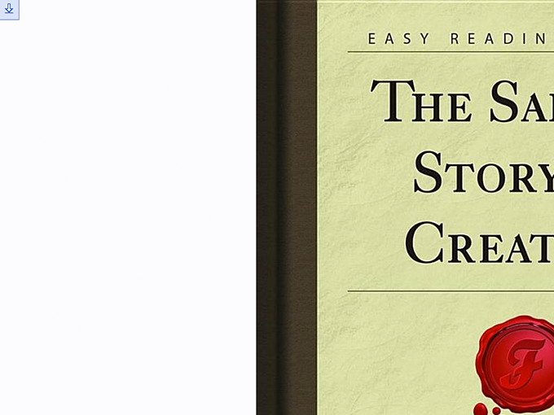
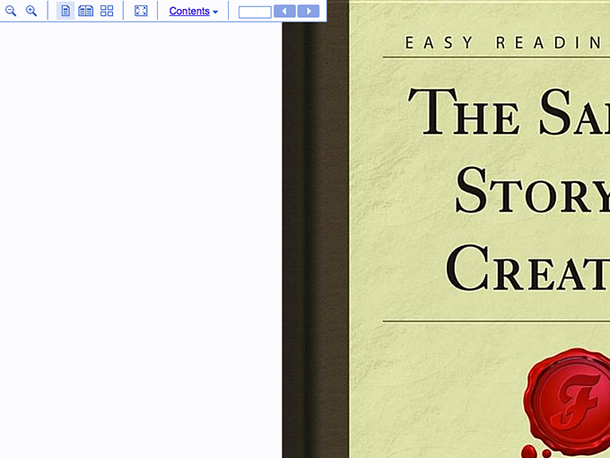
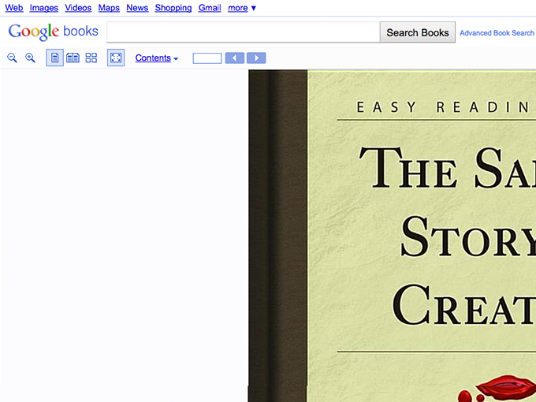

Google Books Fuller Full Screen
Ever since I started using FireFox 4 Beta I’ve been wanting back my favorite plug-ins. Fortunately Firebug has their 1.7a that’s compatible, so that’s good, but GreaseMonkey seems to have been lacking (even with their nightlies). That’s too bad, but then I came across Scriptish by Erik Vold. It’s a great light-weight fork that cuts out the old FireFox code and is lightning fast. Anyways, after editing the plug-in minimum browser version to run with beta 8 I decided to give it a whirl. So here’s my first work-in-progress for Google Books.
// ==UserScript==
// @id Google Books Full Full Screen
// @name Google Books Full Full Screen
// @namespace books.google.com
// @description Makes the Google Books Full Screen Toolbar Smaller
// @include http://books.google.com/books?id=*v=onepage&q&f=true
// ==/UserScript==
function addStyle(css) {
var head, style;
head = document.getElementsByTagName('head')[0];
if (!head) { return; }
style = document.createElement('style');
style.type = 'text/css';
style.innerHTML = css;
head.appendChild(style);
}
addStyle('div#toolbar_container{position:absolute;z-index:9999;background:url("/googlebooks/images/viewport_images-4.gif") no-repeat scroll 1px -24px #DAE3F6;width:25px;height:auto;padding:1px;margin:0 0 5px 0;overflow:hidden;border-bottom:1px solid #6B90DA;border-right:1px solid #6B90DA;}div#toolbar_container:hover{background-image:none;padding:1px;width:auto;height:auto;border-bottom:1px solid #6B90DA;background-color:#FCFCFF;}div#gb-top-search-box{display:none;}div#gbar{display:none;}div.gbh{display:none;}div#guser{display:none;}div#search_bar{display:none;}div#toolbar_container:hover div.top-toolbar-button{border:1px solid #FCFCFF;background-color:transparent;}div#toolbar_container:hover div.top-toolbar-button-checked{background-color:#DAE3F6;}div.top-toolbar-button{border:1px solid #6B90DA;background-color:transparent;}div.top-linkbar-button{display:none;}div.top-toolbar-separator{margin-left:7px;border-left:1px solid #6B90DA;}div#toolbar_container:hover div.top-toolbar-separator{border-left:1px solid #6B90DA;}div#toolbar_container table{margin-left:-9999px;}div#toolbar_container:hover table{margin-left:0;}');
addStyle('div#toolbar_container{-moz-transition:opacity 500ms ease-in-out 0ms, width 500ms ease-in-out 0ms, background-color 500ms ease-in-out 0ms;transition:opacity 500ms ease-in-out 0ms, width 500ms ease-in-out 0ms, background-color 500ms ease-in-out 0ms;}div#toolbar_container:hover{width:425px;}');
Currently, I have written it for the full-screen view, however, Google uses some JavaScript to toggle the full-screen/regular views without doing a full refresh of the page – but it’s passed in a variable in the URL – so currently the script will only load if you either start in full-screen mode, or hard refresh after you toggle it. Fortunately since they already have the JavaScript running I should be able to plug into that and make it work with my update. Also, it only works with single-page view-so I’ve hard coded the url for single page and not for double. If I ever get around to finishing it I’ll upload it to Userscripts. Here’s a couple of before/after pics:



Isn’t it amazing what you can do with just a little bit of CSS? The second function call calls the CSS3 Transitions, in case your browser doesn’t support them. If you want just the altered CSS for some other post-processor besides Scriptish or GreaseMonkey then here’s what I have so far:
/* MAIN TOOLBAR */
div#toolbar_container{
position:absolute;
z-index:9999;
background:url("/googlebooks/images/viewport_images-4.gif") no-repeat scroll 1px -24px #DAE3F6;
width:25px;
height:auto;
padding:1px;
margin:0 0 5px 0;
overflow:hidden;
border-bottom:1px solid #6B90DA;
border-right:1px solid #6B90DA;
}
/* HOVER EFFECTS */
div#toolbar_container:hover{
background-image:none;
padding:1px;
width:auto;
height:auto;
border-bottom:1px solid #6B90DA;
background-color:#FCFCFF;
}
div#toolbar_container:hover div.top-toolbar-button{
border:1px solid #FCFCFF;
background-color:transparent;
}
div#toolbar_container:hover div.top-toolbar-button-checked{
background-color:#DAE3F6;
}
div#toolbar_container:hover div.top-toolbar-separator{
border-left:1px solid #6B90DA;
}
div#toolbar_container:hover table{
margin-left:0;
}
/* HIDES */
div#gb-top-search-box,div#gbar,div.gbh,div#guser,div#search_bar,div.top-linkbar-button{
display:none;
}
/* MISC. */
div#toolbar_container table{
margin-left:-9999px;
}
div.top-toolbar-separator{
margin-left:7px;
border-left:1px solid #6B90DA;
}
div.top-toolbar-button{
border:1px solid #6B90DA;
background-color:transparent;
}
/* CSS3 TRANSITIONS */
div#toolbar_container{
-moz-transition:opacity 500ms ease-in-out 0ms,width 500ms ease-in-out 0ms,background-color 500ms ease-in-out 0ms;
-o-transition:opacity 500ms ease-in-out 0ms,width 500ms ease-in-out 0ms,background-color 500ms ease-in-out 0ms;
-webkit-transition:opacity 500ms ease-in-out 0ms,width 500ms ease-in-out 0ms,background-color 500ms ease-in-out 0ms;
transition:opacity 500ms ease-in-out 0ms,width 500ms ease-in-out 0ms,background-color 500ms ease-in-out 0ms;
}
div#toolbar_container:hover{
width:425px;
}
Oh, a couple of last notes – the arrow used comes from the same CSS sprite as the rest of the images, so it’s very useful in that regard – no extra pictures. The book is The Samoan Story of Creation from Forgotten Books.